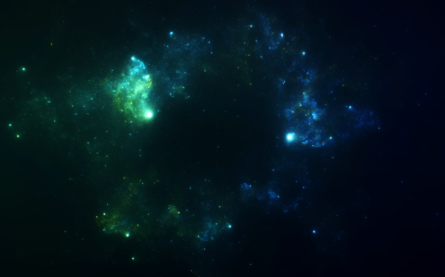

My Hobbies

Tabletop Gaming - D&D
Strategic roleplaying with a group of peers to progress through a story, promoting
creative thinking, team building and social skills.
Magic The Gathering
This is a collectible card game made by the "Wizards of the Coast" that employs strategic
thinking to determine value between different cards and tactical decisions to be made when
confronting an upcoming problem.
Warhammer - Both Varieties
This is a tabletop game that uses miniatures which you build and paint to suit the
aesthetic that you want for your army, which can range from robots, space elves, orcs,
demons, humans, and more. Thats just for 40K!